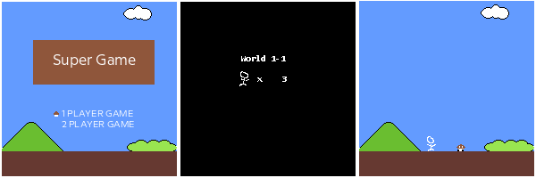

Defining a Scene
One of the most common things developers will implemented in their game is some concept of a "Scene" or "Screens". For example, most people reading this are probably familiar with the game Super Mario Bros. for the Nintendo Entertainment System. Going from first turning the game one to starting the first level, it presents the following scenes

- The title scene where the player is given the option of choosing a 1 or 2 player game
- Next a brief loading screen is shown that presents information to the player(s) such like the what World they are starting on and the number of lives they have.
- Finally, the level scene is shown for the level they are on and game play begins.
Each of these scenes that the player sees has a clear and defined purpose for the visuals that it presents and the controls it gives the players. Scenes are not a new concept to game development. Many game engines, such as Unity, implement the concept of scenes at their core.
In MonoGame, the default Game1 class that we are given when creating a new project can be though of as a scene. This works great when we are prototyping or making something on super small scale. However, keeping all of our code in Game1 isn't very scalable and will quickly become hard to manage as the scope of the game increases.
Since Game is like a scene, we can use it as our foundation for defining the structure of our Scene class. A few concept we'll borrow from it will be
- An
Initialize()method which can be used to initialize our scene. - A
LoadContent()method which can be used to load all of our scene specific content. - An
UnloadContent()method where we can unload and dispose of any content no longer needed when the scene is no longer in use. - An
Update(GameTime)method we can use to update the scene each frame. - A
Draw(GameTime, SpriteBatch)method we can use to draw the scene.
Now that we have a basic definition of what our Scene class will look like, let's move on to the next page where we'll start creating our project and the Scene class.